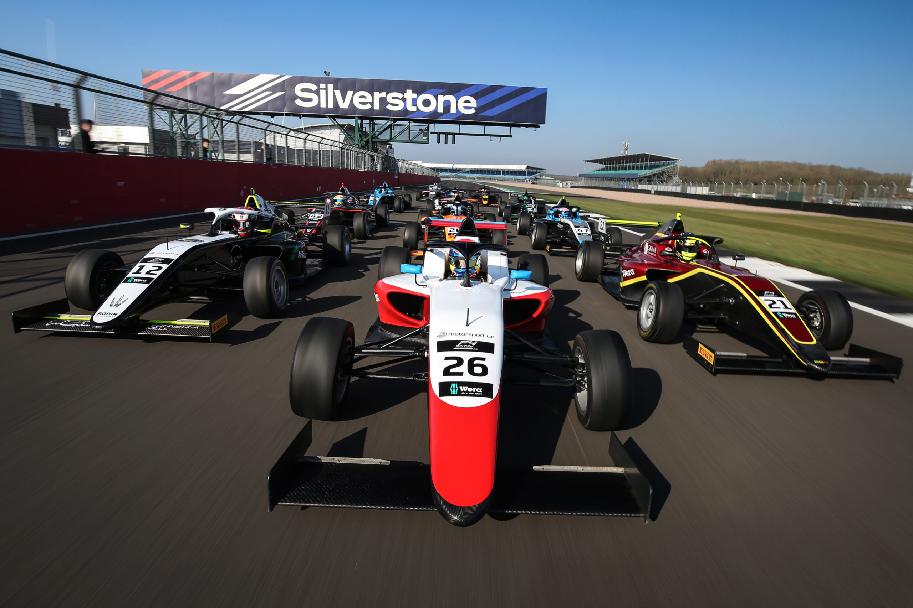

Flat through Copse Corner
The site of legendary battles and overtakes from the pinnacle of motorsport, fully send it yourself and try to avoid 50G crashes.

For the best racing experience, we recreated the layout of Silverstone circuit in England along with Circuit de Spa-Francorchamps in Belgium. Real Formula One tracks, professionally surfaced and maintained, practically in your backyard.

The site of legendary battles and overtakes from the pinnacle of motorsport, fully send it yourself and try to avoid 50G crashes.
The elevation change from the real track makes its way to Rexburg. One of the greatest corners on the F1 calendar is yours to drive.
Full size garages sit between the pitlanes of both tracks. Everything you need for car maintenance, setup edits, and tire changes are right inside your personal box.
Apply to race and strap into your own open-wheeled racecar today.
See race plans